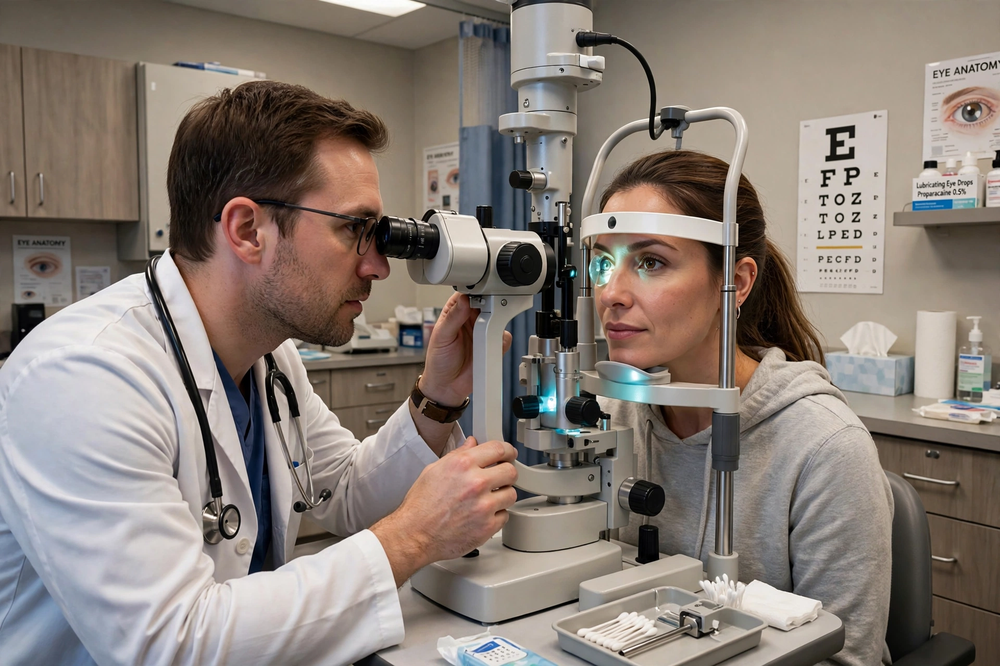

From Wikipedia, the free encyclopedia
| Ophthalmology | |
| Focus | Diseases and surgery of the eye and visual system |
|---|---|
| Specialist | Ophthalmologist |
| Key diseases | Cataract, glaucoma, macular degeneration, diabetic retinopathy, refractive errors |
| Key procedures | Cataract surgery (phacoemulsification), LASIK, vitrectomy, intravitreal injections |
| Distinguished from | Optometry and orthoptics (non-physician eye care) |

Ophthalmology is the branch of medicine and surgery concerned with the diagnosis and treatment of disorders of the eye and visual system. An ophthalmologist is a physician (MD or DO) who specialises in eye and vision care, including medical treatment, surgery, and the prescription of corrective lenses — a broader scope than that of optometrists and opticians. The word derives from the Greek ophthalmos (eye) and logia (study). Ophthalmology was among the first branches of medicine to develop as a distinct specialty, with its own professional societies and certifying boards.
The specialty covers diseases of the cornea and ocular surface, lens (cataract), retina and vitreous, glaucoma, neuro-ophthalmology, paediatric ophthalmology and strabismus, oculoplastic and orbital surgery, ocular oncology, and uveitis and ocular inflammation. Refractive surgery — procedures such as LASIK and PRK that reshape the cornea to correct myopia, hyperopia, and astigmatism — is a major elective field. Diagnostic practice relies on instruments including the slit lamp, direct and indirect ophthalmoscopes, tonometers for intraocular pressure, perimetry for visual fields, and optical coherence tomography (OCT) for cross-sectional imaging of the retina.
Worldwide, the leading causes of vision loss are uncorrected refractive errors and cataract — the clouding of the lens, treatable by one of the most common and successful operations in all of medicine, in which the lens is emulsified (phacoemulsification) and replaced with an intraocular lens implant. Glaucoma, a group of optic neuropathies often associated with raised intraocular pressure, causes irreversible peripheral vision loss if untreated. Age-related macular degeneration and diabetic retinopathy are the dominant retinal diseases of wealthy countries; the former and several other retinal conditions are now treated with repeated intravitreal injections of anti-VEGF drugs, among the most frequent procedures in modern medicine. Trachoma and onchocerciasis remain significant infectious causes of blindness in poorer regions and are targets of WHO elimination campaigns.
Eye medicine has ancient roots: the Egyptian Ebers Papyrus describes ocular remedies, and the Indian surgeon Sushruta described cataract "couching" in the first millennium BCE. In the Islamic Golden Age, Hunayn ibn Ishaq and Alhazen (Ibn al-Haytham), whose Book of Optics (c. 1021) revolutionised the understanding of vision, laid foundations for the field. The invention of the ophthalmoscope by Hermann von Helmholtz in 1851 first allowed direct inspection of the living retina, and ophthalmology blossomed in the 19th century with figures such as Albrecht von Graefe in Berlin. The 20th century brought intraocular lenses (Harold Ridley, 1949), operating microscopes, lasers, and vitreoretinal surgery; the 21st has added gene therapy for inherited retinal dystrophies.
In most countries, ophthalmologists complete medical school followed by a residency of three to five years in ophthalmology, with optional fellowship training of one or two years in a subspecialty. Ophthalmology is consistently among the most competitive residencies to enter.